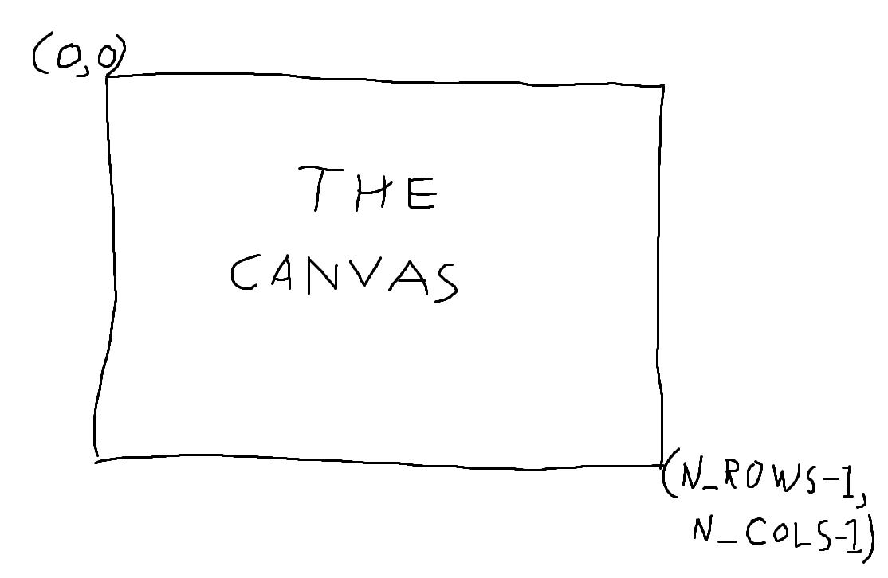

The year is 1985 . . . Microsoft has just released Windows 1.0 and packaged
with it is a beautiful program called Paint, later referred to as MS Paint.
For many people, this program is the beginning of a wonderful journey into the
world of digital art.
In this assignment, you will be implementing CS Paint, COMP1511's answer to the venerable drawing program. CS Paint is a program that allows us to draw images to our terminal using a series of commands. The commands are made up of integers and are typed directly into our program. Each command will make some change to a digital canvas, a space for drawing.
CS Paint is already capable of setting up and drawing its canvas, it will be up to you to write code so that it can read commands and make the correct changes in the canvas.
Note: At time of release of this assignment (end of Week 3), COMP1511 has not yet covered all of the techniques and topics necessary to complete this assignment. At the end of Week 3, the course has covered enough content to be able to read in a single command and process its integers, but not enough to work with two dimensional arrays like the canvas or be able to handle multiple commands ending in End-of-Input (Ctrl-D). We will be covering these topics in the lectures, tutorials and labs of Week 4.
The canvas is a two dimensional array (an array of arrays) of integers that represents the space we will be drawing in. We will be referring to individual elements of these arrays as pixels on the canvas.
The canvas is a fixed size and has N_ROWS rows, and
N_COLS columns. Both of these are defined constants.
Both the rows and columns start at 0, not at 1.
The top left corner of the canvas is (0, 0) and the bottom right
corner of the canvas is (N_ROWS - 1, N_COLS - 1). Note that we are
using rows as the first coordinate in pairs of coordinates.
For example, if we are given an input coordinate 5 10, we will use
that to find a particular cell in our canvas by accessing the individual element
in the array: canvas[5][10]

The integers in the pixels represent colours between black (which we call
0) and white (which we call 4).
We will be starting with a white canvas and drawing black onto it, but as we
progress, we will also be using shades of grey (not 50 of them, just a few).
Note that these colours assume you have white text on a black background.
For reference, the shades are:
Black (0): Dark (1): ░░ Grey (2): ▒▒ Light (3): ▓▓ White (4): ██
An empty canvas is shown below. In this documentation, we will always show you two versions of the output. In the "Output" you can see the version that your program is expected to produce (numbers between 0 and 4).
In the "Output (Stylized)" tab you can see a more readable version with the numbers converted to shades.
Note that you are not expected to produce this stylized output - we have tools that will convert it for you. Your program only needs to print the grid of numbers, as shown in the "Output" tab.
{{ show_cs_paint_example_output('Empty Canvas', []) |safe}}
If you're curious, by the end of the assignment you'll be able to produce an image like this:
{{ show_cs_paint_example_output('Technicolour', [ "3 0", "2 0 0 19 35", "3 1", "2 1 1 18 34", "3 2", "2 2 2 17 33", "3 3", "2 3 3 16 32", "3 4", "2 4 4 15 31", "3 3", "2 5 5 14 30", "3 2", "2 6 6 13 29", "3 1", "2 7 7 12 28", "3 0", "2 8 8 11 27", "3 1", "2 9 9 10 26", "5 0 1 0 -1 2 -1 0 1 0", "1 10 1 10 34" ]) |safe }}
Each command given to the program will be a series of integers.
The first integer will always be the type of command, e.g. 1
means Draw Line.
Depending on what command the first integer specifies, you will then scan in some number of "arguments" (additional integers) that have a specific meaning for that command.
For example:
{{ show_cs_paint_example_text('1 5 5 10 5') | safe }}
(see below for more details on this and other commands).
Your task for this assignment is to write a program that reads in one or more commands and outputs a canvas that shows the result of the commands.
Your program will be given commands as a series of integers on standard input. Your program will need to scan in these integers and then make the necessary changes in the canvas.
Initial tests will be with a single command per run of the program, but more advanced tests will expect the program to be able to scan and run multiple commands.
In this assignment, there are no restrictions on C Features, except for those in the Style Guide.
We strongly encourage you to complete the assessment using only features taught in lectures up to and including Week 4. You can get full marks using the following features:
int variables.
if statements, including all relational and logical operators.
while loops.
int arrays.
printf and scanf.
Particularly, you do not need to use any pointers (or malloc) to gain full marks. They will
only complicate the assignment. You also do not need to use for loops, and they are strongly discouraged.
If you choose to disregard this advice, you must still follow the Style Guide. You also may be unable to get help from course staff if you use features not taught in COMP1511.
cp -n /web/cs1511/19T2/cs_paint/paint.c .
cp -n /web/cs1511/19T2/cs_paint/tests.zip .
You should download the above files to start the assignment.
paint.c is the starting point for your CS Paint program. We've
provided you with some starter code to construct a canvas and to display it on
the screen; you'll be completing the rest of the program.
tests.zip is a collection of test files that you can use to test
your program. Each test file contains a series of commands that your program can
use to draw images on the canvas.
Input to your program will be via standard input (similar to typing into a terminal).
You can assume that the input will always be integers and that you will always receive the correct number of arguments for a command.
You can assume that input will always finish with the "End of Input" signal (Ctrl-D in the terminal).
Details on each command that your program must implement are shown below.
Stage One implements basic drawing functions, giving your program the ability to draw lines and rectangles.
In Stage 1, you will be implementing the Draw Line command to draw horizontal and vertical lines.
The Draw Line command is given four additional integers, which
describe two pixels: the start and end pixels of the
line.
Each pixel consists of two numbers: the index of the row,
and the index of the column.
For example, the command 1 10 3 10 10 tells your program to
draw a line (1),
starting at the pixel at row 10 and column 3,
and ending at the pixel at row 10 and column 10.
When given the Draw Line command, your program should set the colour of the
relevant elements in the canvas array, starting at the provided
start pixel location, and continuing along the horizontal or
vertical line until it reaches the end pixel location (including
both the start and end pixels themselves).
Your program will only be drawing either horizontal or vertical lines in
Stage 1, which means that either row1 and row2
will be the same, or col1 and col2 will
be the same.
If row1 == row2 && col1 == col2, your program
should draw a single pixel, at the location
(row1, col1), (row2, col2).
If the given start and/or end pixels would cause a line to be drawn outside of the canvas (either partially or entirely), your program should ignore that Draw Line command and do nothing.
If the given start and end pixels would not give an entirely horizontal or vertical line, your program should ignore that Draw Line command and do nothing.
For the second part of Stage 1, you will be implementing the Fill Rectangle function, to draw rectangles.
The Fill Rectangle command is given four additional integers,
which describe two pixels: the start and end pixels
that make up two corners of the rectangle.
Each pixel consists of two numbers: the index of the row,
and the index of the column.
For example, the command 2 0 0 10 10 tells your program to
draw a rectangle (2),
with one corner at the pixel at row 0 and column 0,
and with the opposing corner at the pixel at row 10 and column
10.
When given the Fill Rectangle command, your program should colour all the pixels
in the rectangle formed by the two corners start and
end.
You can assume that the edges of the rectangle are either vertical or
horizontal, there are no rotated rectangles.
Your program could be given the start and end
points in any order, e.g. 2 6 2 2 2 is valid, and produces
the same result as 2 2 2 6 2.
If row1 == row2 && col1 == col2, your program
should draw a single pixel, at the location
(row1, col1), (row2, col2).
If the given start and/or end pixels would cause a rectangle to be drawn outside of the canvas (either partially or entirely), your program should ignore that Fill Rectangle command and do nothing.
In Stage 2, you will be extending the functionality of your Draw Line and Fill Rectangle commands from Stage 1.
We strongly recommend that you finish Stage 1 before attempting Stage 2, as it would be very hard to test whether Stage 2 is working without Stage 1.
Note that completing Stage 2 is not necessary to gain a passing mark in this assignment.
For the first part of Stage 2, you will be modifying your Draw Line command to be able to draw diagonal lines.
Your program must still be able to draw horizontal and vertical lines as specified in Stage 1.
Your program will only be required to draw diagonal lines that are on a 45 degree angle.
In addition to horizontal and vertical lines, your program will now need to draw 45 degree lines. This means that your input checking will now need to test if two points are precisely diagonally oriented.
As before, if row1 == row2 && col1 == col2, your
program should draw a single pixel, at the location
(row1, col1), (row2, col2).
If the given start and/or end pixels would cause a line to be drawn outside of the canvas (either partially or entirely), your program should ignore that Draw Line command and do nothing.
If the given start and end pixels would not give an entirely horizontal or vertical line, or a diagonal line on a 45 degree angle, your program should ignore that Draw Line command and do nothing.
For the second part of Stage 2, you will be implementing the Change Shade command, which gives you access to both an eraser and different shades of grey.
In CS Paint there are a total of five shades, which we call
{BLACK, DARK, GREY, LIGHT, WHITE}.
They are each represented by a number between
0 (for BLACK) and
4 (for WHITE).
The Change Shade command is given one additional integer: the new shade that you will draw in all future commands, until the shade is changed again.
By default, your program should start with the shade BLACK.
Painting over any other colours in the canvas replaces them with whatever colour the current shade is.
The new shade should be used for both the Draw Line and Fill Rectangle commands.
If the given shade is invalid (i.e., if it is outside of the range 0 to 4), your program should ignore that Change Shade command and do nothing.
In Stage 3 and 4, you will be implementing more advanced commands.
Again, we strongly recommend that you finish Stage 1 and Stage 2 before attempting Stage 3.
Note that completing Stage 3 is not necessary to gain a passing mark in this assignment.
For Stage 3, you will be implementing the Copy Paste command, which allows you to copy a certain section of the canvas, and paste it elsewhere on the canvas.
The Copy Paste command is given six additional integers, which
describe three pixels: start, end, and
target.
The first two pixels, start and end describe the
corners of a rectangle. This is the region that will be copied.
The third pixel, target describes the top-left pixel of the
position on the canvas where that rectangle will be pasted.
The diagram below describes what these points are:

After calling the Copy Paste command, every pixel in the
rectangle bounded by start and end should be copied to
a rectangle of the same size that has target as its top left pixel.
As with the Fill Rectangle command,
your program could be given the
start and end points in any order: they
may not necessarily describe the top-left and bottom-right pixels of the
rectangle.
The pixels should be copied exactly, regardless of what the current shade is.
It is valid to paste into a rectangle that overlaps with the copied rectangle. This means that, to earn full marks for this stage, the program must read all pixels in the copy rectangle before writing any pixels to the target rectangle. This will likely require a separate array to store the copied pixels before they're written to the target rectangle.
If any of the given pixels would cause any part of the copying or pasting to go outside of the canvas, your program should ignore that Copy Paste command and do nothing.
In Stage 4, you will again be implementing more advanced commands.
Again, we strongly recommend that you finish Stage 1 and Stage 2 before attempting Stage 4.
Note that completing Stage 4 is not necessary to gain a passing mark in this assignment.
The Additive Brush command gives CS Paint access to a special brush for the Draw Line command.
In addition to the existing one-pixel brush, you now have access to a nine pixel brush. This brush will affect a 9 pixel square for every pixel that the original brush would have drawn.
The Additive Brush command takes nine arguments, which represent the additions that should be made to each of the 9 pixels under the brush:
The first argument describes the shade to be added to the pixel located diagonally above and to the left of the pixel currently being drawn on.
The second argument describes the shade to be added to the pixel directly above the pixel currently being drawn on.
The third argument describes the shade to be added to the pixel located diagonally above and to the right of the pixel currently being drawn on.
The third through fifth arguments describe the row below the first three including the pixel currently being drawn on, and the sixth through eighth describe the row below that.
This brush is additive, which means that instead of overwriting the shades on the canvas, it adds to (or removes) them. For every pixel that the brush touches, those pixels' values should change by the corresponding amount.
If this would cause any pixel to be outside of the valid range of shades, it
should instead be changed to the closest valid shade (i.e. if a shade would
cause a pixel to have value -2, that pixel should instead be given
the value 0).
This correction should happen once for every pixel the brush touches (i.e. as the brush moves, you should ensure the canvas is never in an invalid space.)
This brush should be used until either the Change Shade command is used (to return to a one-pixel brush of a given shade), or the Additive Brush command is called again to specify a new nine-pixel brush. This means that if you are given, for example the Draw Line command, you should use the Additive Brush to draw that line, rather than the 1 pixel brush.
This function will never receive invalid input.
This may cause other commands to draw outside the canvas (even when the normal brush would not). In this case, those commands should be ignored.
9 to mean "fill". It should take one pair of coordinates, and a new shade.
Then, find all the pixels of the same color that indirectly connect to that pixel (in this case, that means
that they share an edge with that pixel - pixels that are only diagonally connected do not count).
Those pixels should all become the new shade mentioned in the command.
It should operate similar to the paint-bucket in MS Paint.8 to mean "undo". The undo should restore the previous shade below what was drawn.
Solutions should not just save the entire previous board state - the more "intelligent" your solution (that can undo the board with
less information), the better.7 to mean "draw solid circle". It should take one pair of coordinates to define the
circle's centre, followed by one number to define the circle's radius. Any pixels which which are closer to the centre
than the length specified in the radius should be set to the colour that a draw rectangle command would use.It is important to test your code to make sure that your program can perform all the tasks necessary to become CS Paint!
There are a few different ways to test (that are described in detail below):
Typing in your own commands. You can use the commands shown above as examples, or workout your own.
Testing from a series of commands written in a file. We have provided a
set of test files that cover nearly all possible situations and commands
that CS Paint should implement.
Download the test files for the assignment here.
Using autotests to run through all the test files at once.
Running a Reference Implementation that we have created for you to compare against.
If you are testing with your own commands or commands written in a file, you can either use numerical output or our canvas output.
If you are debugging, or want to see the raw numbers as output, you can compile and run your program as follows:
ls paint.c tests/ dcc -o cs_paint paint.c ./cs_paint [type in your commands here, then type Control+D] [your canvas will print out]
If you have an input file you want to run, you can specify them like this.
ls paint.c test_file1.in test_file2.in dcc -o cs_paint paint.c ./cs_paint < test_file1.in [the output of running the commands in test_file1.in]
This approach is limited to one input file at a time.
1511 canvas
You can run the command 1511 canvas on CSE computers
(including via VLAB) along with the name of your C file,
and we will compile it and show you the stylized output
similar to in our examples in the Stages above.
1511 canvas paint.c You have run canvas without specifying any tests. You may quit this program with Control + C You can type lines below, and then press Control + D to see what output those lines produce. [type in your commands here, then press Control + D]
If you have input files you want to run, you can specify them like this.
ls paint.c test_file1.in test_file2.in 1511 canvas paint.c test_file1.in test_file2.in ==> test_file1.in <== [the output of running the commands in test_file1.in] ==> test_file2.in <== [the output of running the commands in test_file2.in]
If you have many files you want to run, you can use the asterisk
(*) instead of a name to mean "every".
ls tests/ paint.c directory1 directory2 ls directory1/tests/ test_file1.in test_file2.in ls directory2/ other_test1.in other_test2.in 1511 canvas paint.c */* ==> directory1/test_file1.in <== [the output of running the commands in directory1/test_file1.in] ==> directory1/test_file2.in <== [the output of running the commands in directory1/test_file2.in] ==> directory2/test_file1.in <== [the output of running the commands in directory2/test_file1.in] ==> directory2/test_file2.in <== [the output of running the commands in directory2/test_file2.in] 1511 canvas paint.c directory2/* ==> directory2/test_file1.in <== [the output of running the commands in directory2/test_file1.in] ==> directory2/test_file2.in <== [the output of running the commands in directory2/test_file2.in]
On CSE computers (including via VLAB), the input files we have provided can all be checked at once using the command:
1511 autotest cs_paint paint.c
If you have questions about what behaviour your program should exhibit, we have provided a sample solution for you to use.
You can use it by replacing the name of your C file with the word
solution like so (on CSE Computers or via VLAB):
ls test_file1.in test_file2.in 1511 canvas solution test_file1.in test_file2.in ==> test_file1.in <== [the output of running the commands in test_file1.in] ==> test_file2.in <== [the output of running the commands in test_file2.in]